Іноді так трапляється, що в старого інструмента щось ламається, наприклад - ручка в молота взяла і відламась. У такому разі, тобі нічого не лишається, крім як робити нову. Бо в селі не можна без справного інструменту))
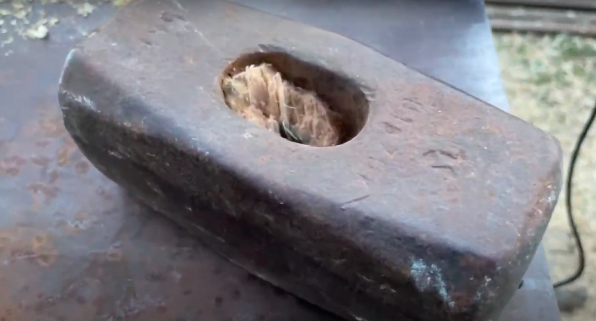1. Спочатку ти виколупуєш залишки старої ручки з ржавої залізяки.
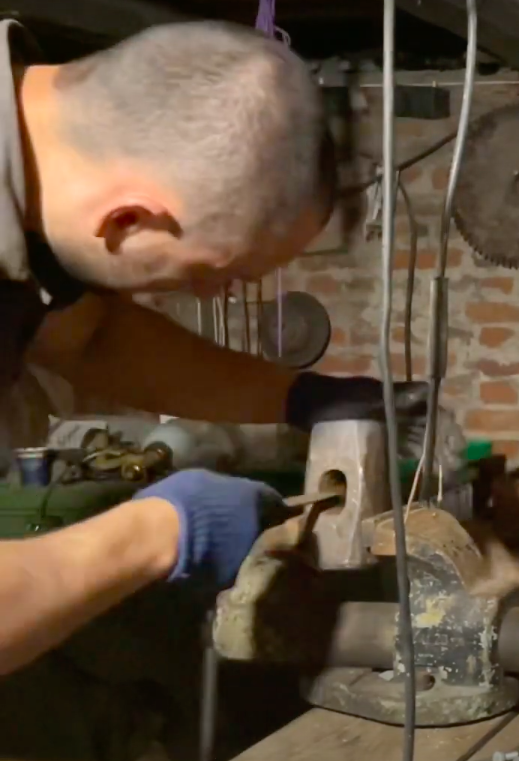2. Ржаву залізяку робиш красІвою та блискучою)
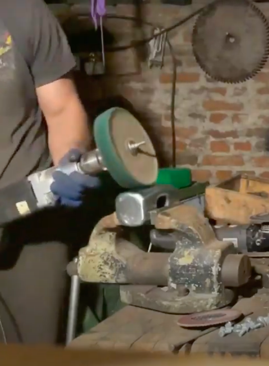3. Пару хвилин крутиш в руках блискучий молот і дивуєшся тому, що на ньому були якісь написи і навіть совковий цінник)
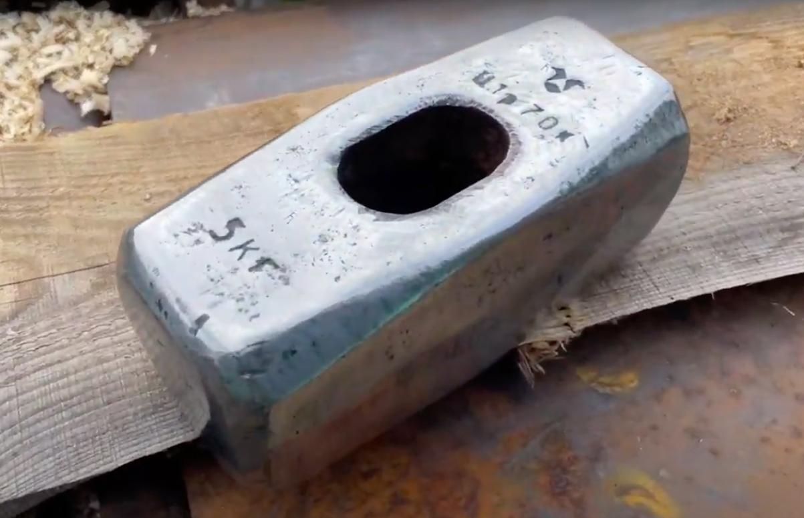4. Берешся мастирити нову ручку. Для цього тобі знадобиться шмат дерева. Акації, наприклад...
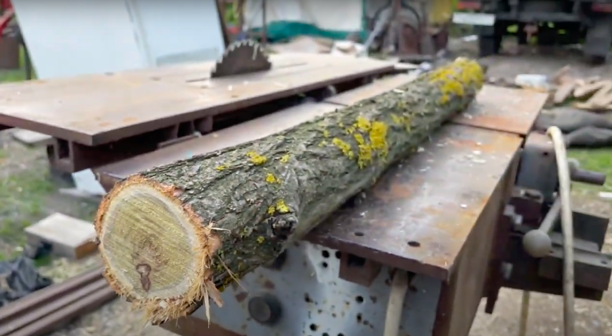 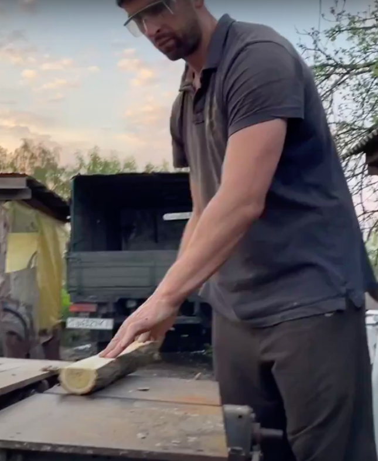5. ...далі тобі слід кілька годин дихати пилюкою під час шліфування. Це все в позі "раком", звісно ж.
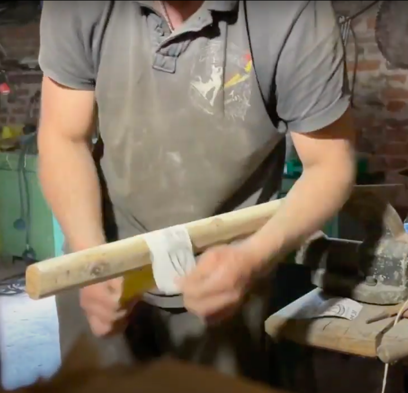6. Потім тобі знадобиться олія. Ні, мій друже, не для похотливих ігрищ, а для того аби захистити твою щойно зроблену ручку від всякого зовнішнього гімна і просто щоб та ручка була красивіше.
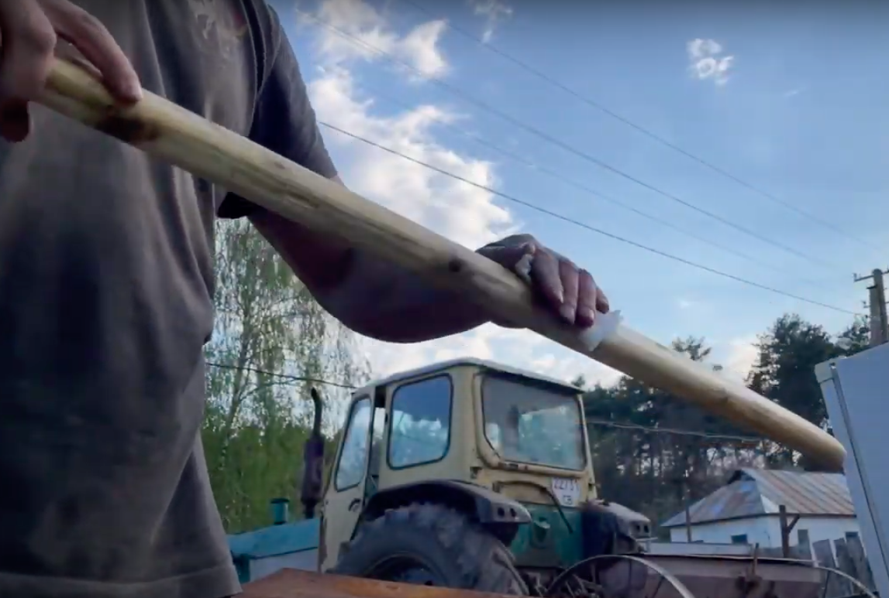7. Ну а зараз ти будеш в ролі тьоті Каті з районного ЗАГСу, яка розписує молодят. Тобі потрібно одружити молот з ручкою. Бери клей і змащуй ним клинок, котрий буде надійно тримати в союзі молот і його новеньке руків'я.
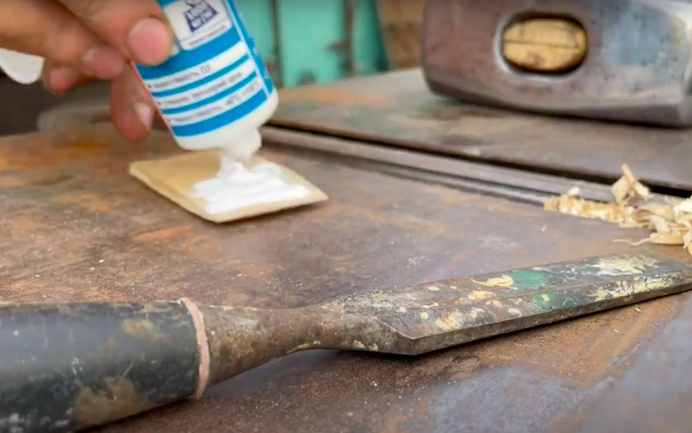8. Всьо! Вуаля! Ти красавчік! Ти просрав цілий день, але у тебе тепер самий красІвий та блискучий молот на все село! Мама тобі за це має обов'язково купити піковіт)
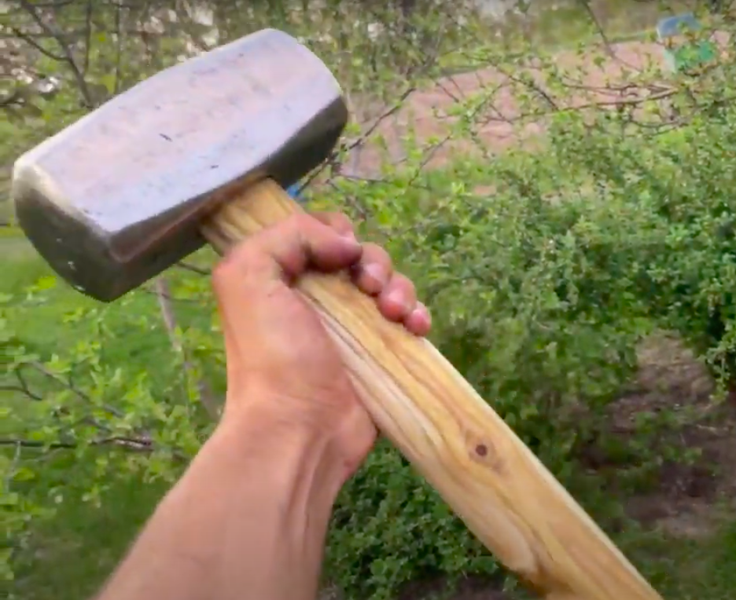 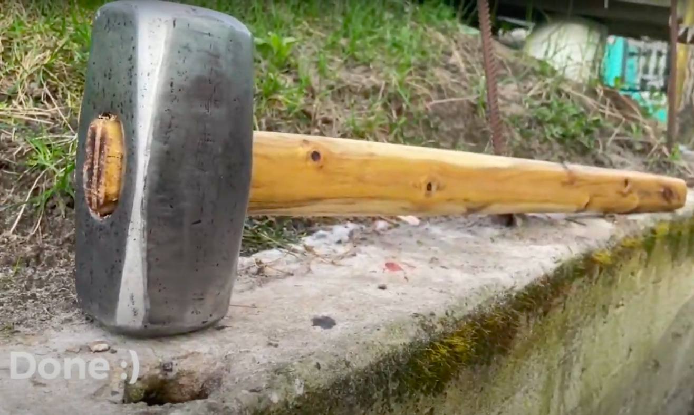